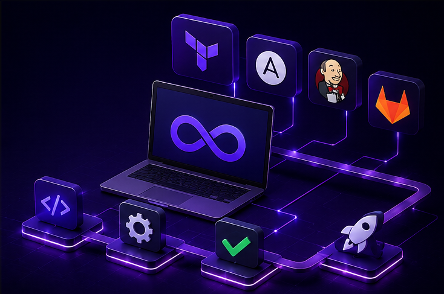
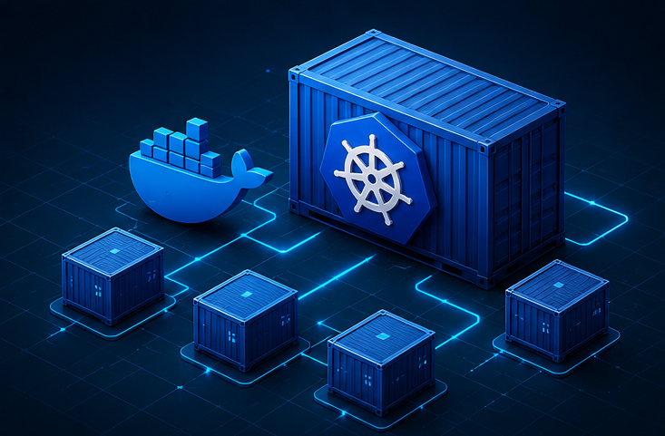
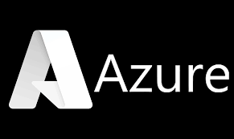
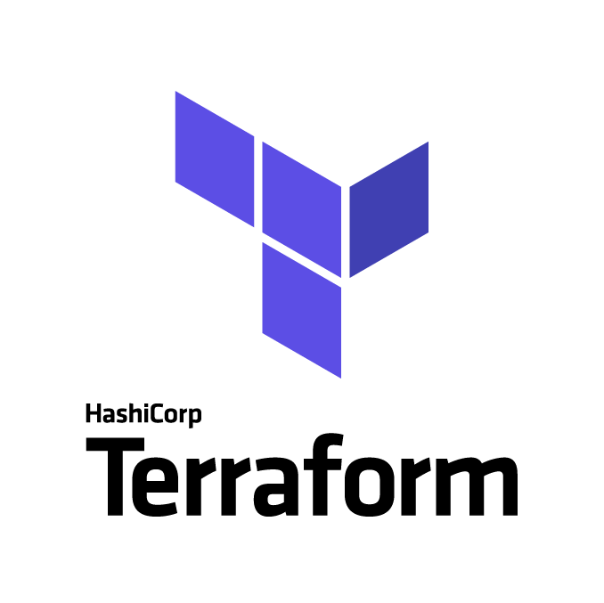
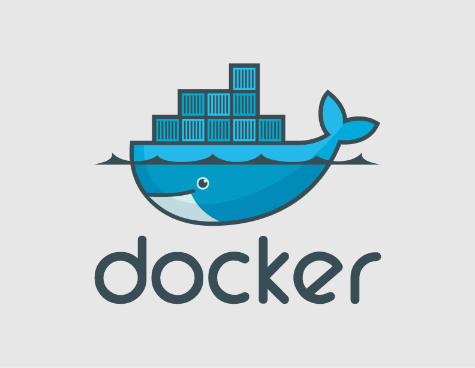
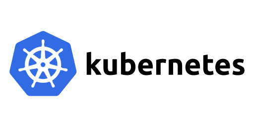

Mes projets
Cloud & Architecture
Conception et déploiement d’infrastructures cloud sur AWS et Azure avec gestion des ressources, réseau et services de base.
- AWS / Azure
- architecture basique (VPC, VM, réseau)
- déploiement infrastructure
Infrastructure as Code / DevOps
Automatisation du provisionnement et des déploiements via Terraform, Ansible et pipelines CI/CD.
- Terraform
- Ansible
- Automatisation d'infrastructure
- Pipelines CI/CD

Conteneurisation & Orchestration
Mise en place et gestion d’environnements conteneurisés avec Docker et Kubernetes pour déploiements applicatifs.
- Docker
- Kubernetes
- LXC

Cybersécurité Opérationnelle
Sécurisation des systèmes Linux et cloud, analyse de vulnérabilités et durcissement des infrastructures.
- Hardening Linux
- Pentesting / Vulnérabilités
- OSINT / Malwares labs
Stacks Technologiques






À propos de moi
Ingénieur spécialisé en Cloud, DevOps et cybersécurité avec une expérience sur des environnements Linux, l’automatisation d’infrastructures et la sécurisation de systèmes. J’interviens sur des sujets liés au cloud, à l’Infrastructure as Code, aux pipelines CI/CD et aux environnements conteneurisés via Docker et Kubernetes.
À travers différentes missions techniques et projets personnels, j’ai développé une approche orientée automatisation, fiabilité et amélioration continue des infrastructures.
Obtenir mon CV